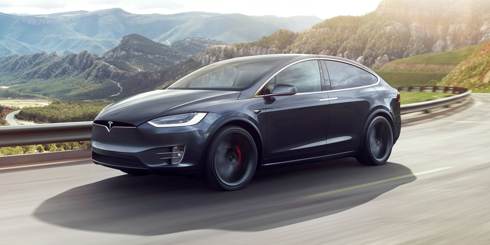
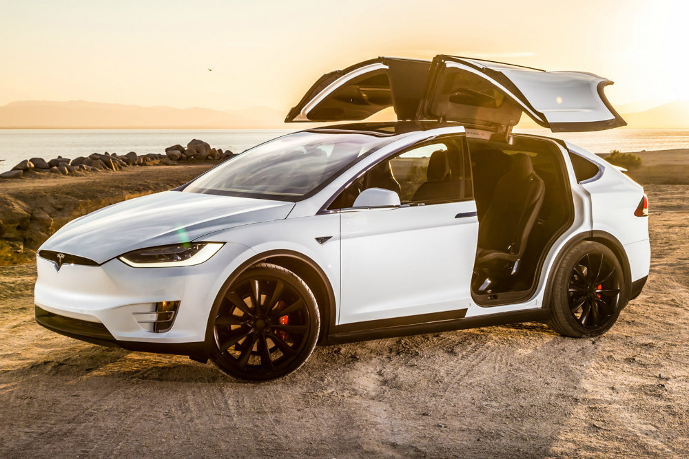
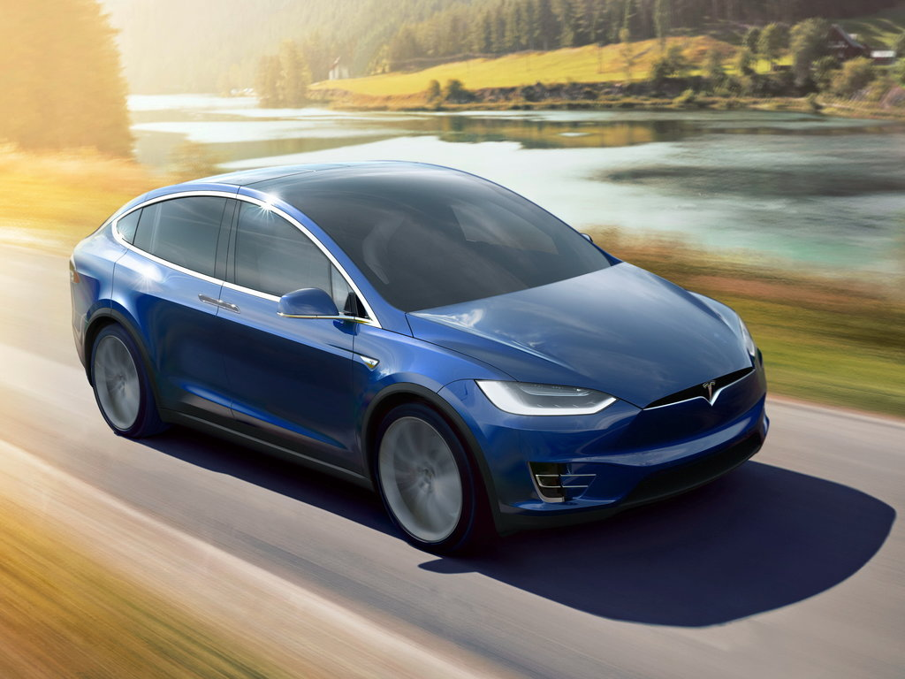

Tesla Model X —это наш полноразмерный электрический кроссовер.
Разгоняется до 100 км/ч за 2,6 секунды.

Безопасность
Tesla Model X - самый безопасный внедорожник
Model X - один из самых безопасных внедорожников. Созданный с нуля как электромобиль. Кузов, шасси, удерживающие устройства и аккумуляторная технология обеспечивают очень низкую вероятность травм пассажиров.

Полезность
Место для всего.
Модель X имеет наибольшее количество кладовых из всех внедорожников в своем классе, удобные сиденья для семи взрослых и возможность буксировать до 5000 фунтов. Двери Falcon Wing оснащены датчиками, контролирующими близость к окружающей среде, и могут открываться даже в самых тесных парковочных местах.

Полный привод
Двухмоторный полный привод мгновенно контролирует тягу и крутящий момент в любых погодных условиях
Самый быстрый внедорожник на земле - разгон до 100 км / ч всего за 2,6 секунды.
Полностью электрическая трансмиссия Tesla обеспечивает беспрецедентную производительность в любых погодных условиях, с двойным приводом на все колеса, адаптивной пневматической подвеской и самым быстрым из всех внедорожников ускорением на дороге - с нуля до 100 км / ч за 2,6 секунды.
Автомобиль доступен в трех спецификациях:
Модель 75D, где D означает Dual Motor, т.е. в базовой комплектации автомобиль оснащен двумя электродвигателями. Цифра 75 относится к ёмкости батареи и составляет 75 кВт*ч.
Модель 90D комплектуется двумя двигателями и разгоняется до 100 км/ч за 4,8 секунды, что на 0,1 секунды быстрее 440-сильного внедорожника Porsche Cayenne GTS.
Модель P90D укомплектована двумя электродвигателями общей мощностью 772 лошадиных сил: 259 л.с. на передней оси и 503 л.с. на задней. С места до 100 км/ч разгоняется за 3,8 секунды, а с дополнительным пакетом Ludicrous Speed Upgrade – за 3,2 секунды. Эта модель быстрее, чем Lamborghini Gallardo LP570-4 или McLaren MP4-12C.